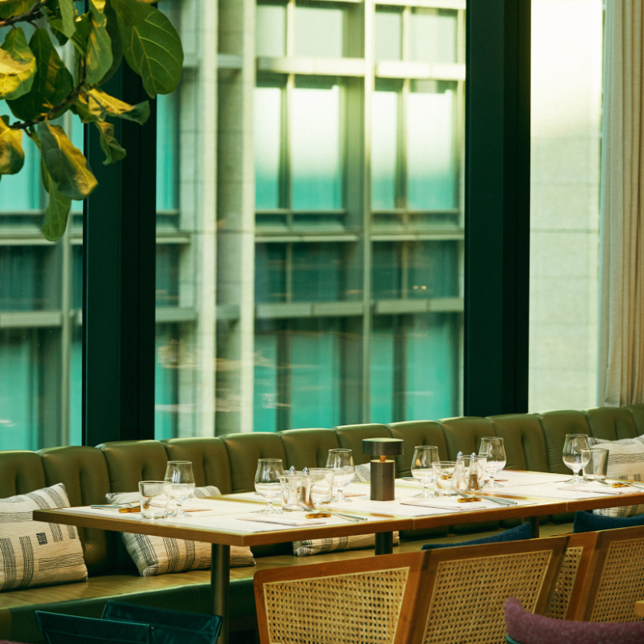
2022.08.05
高揚感に満ちた場所である、コンテンポラリーレストラン“THE UPPER”。料理と空間ともに、クラシックとイノベーティブが融合した唯一無二のお店だ。進化を続ける最先端のレストランにもLG Stylerが設置されているというから、その親和性を探りに伺う。
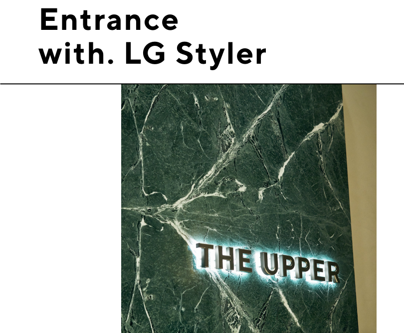
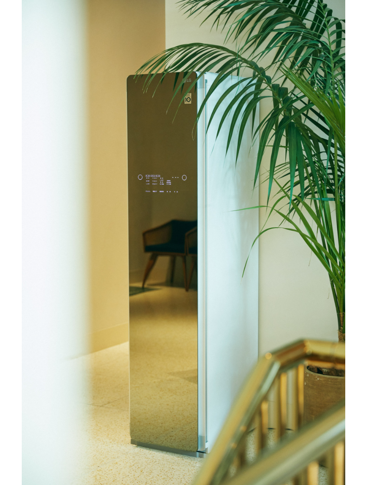
シドニーを拠点に世界で活躍するデザイナー、ルケッティ・クレラが空間デザインを担った“THE UPPER”。店舗のエントランスである10Fエレベーターを降りると、そのモダンな佇まいに一目で気分が上がる。受付前にはLG Stylerが設置され、決して主張し過ぎずスマートに溶け込んでいた。
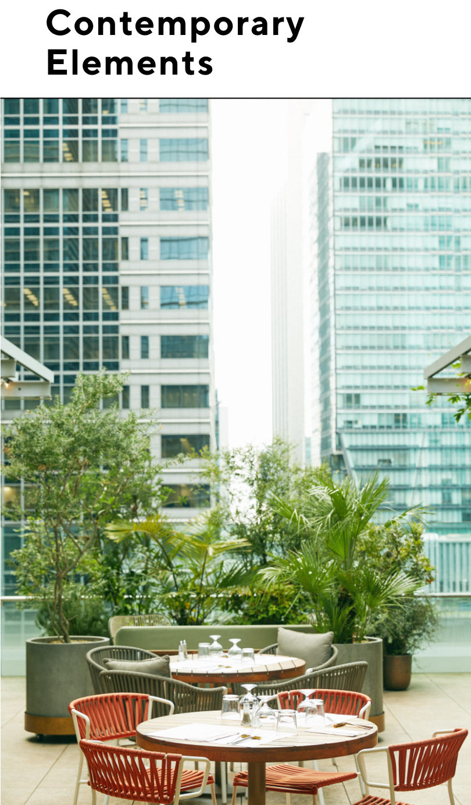
広く抜けた見通しに、解放感の溢れる天井高、細部まで洗練された空間デザインは、一歩踏み入るだけで気持ちがいい。料理はというと、フランスの大衆酒場であるブラッスリーのメニューを引き継ぎながら、現代的に仕上げているのが特徴で、アラカルトが50皿以上と豊富なラインナップだから何度訪れても楽しめる。驚きと親しみやすさを兼ね備えた食事の時間を彩るのは、名だたるDJ達によるプレイリストだ。
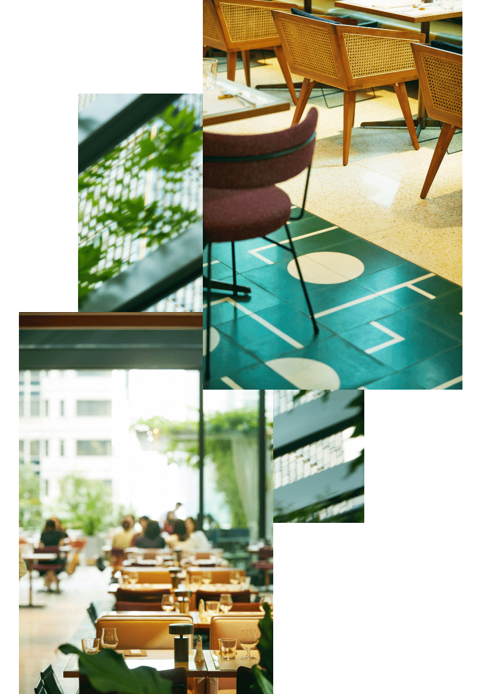
座り心地を追求したチェアのファブリックの張り替えや、食事のしやすいテーブル表面の加工など、ルケッティ・クレラのデザインを引き継ぎながらも、よりハイクオリティな空間であるために店舗の細部を更新し続けている“THE UPPER”。LG Stylerの導入もその一つだったといいう。
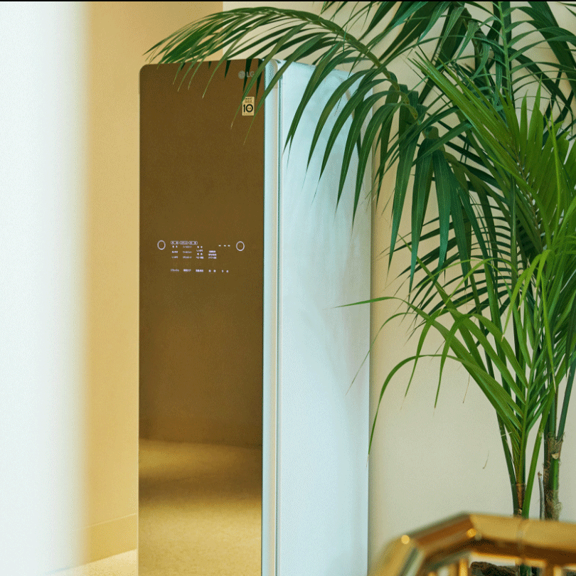
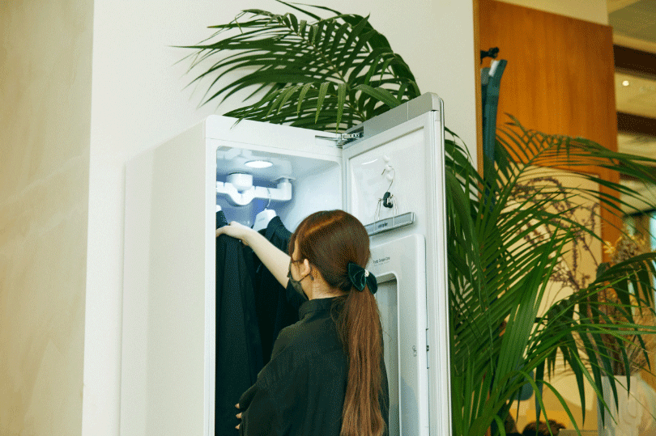
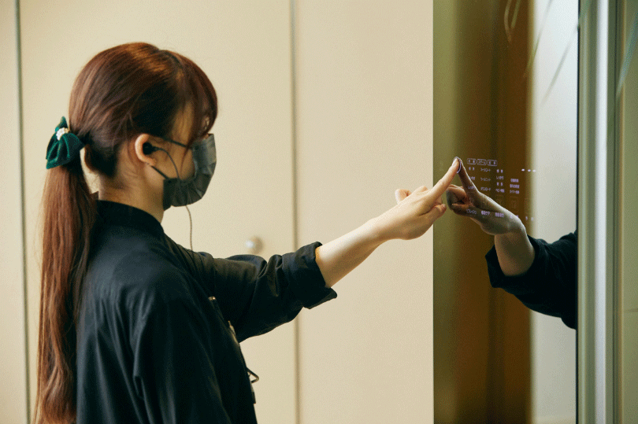
「お客様へのサービスとして、1時間ほどでお召し物をケアできるLG Stylerは、とても理に適っていました。充実した食事の後に、帰り道まで気持ちよさを届けられたら嬉しいですよね。スマートなデザインなので何を邪魔することもなく高級な什器に馴染みました。ちなみにお帰りの際の姿見代わりとしても活躍しているようです」。
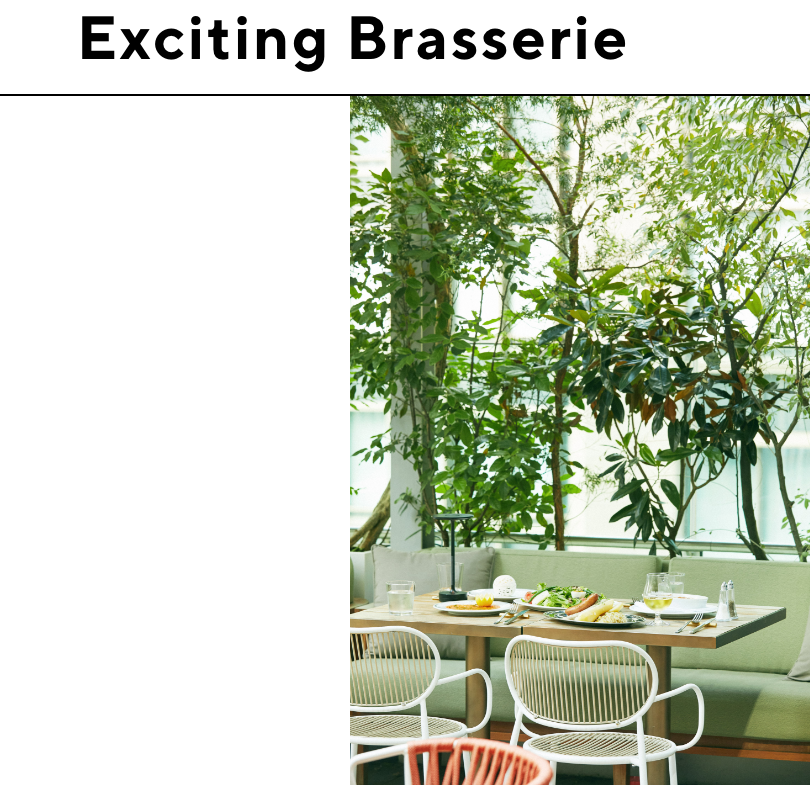
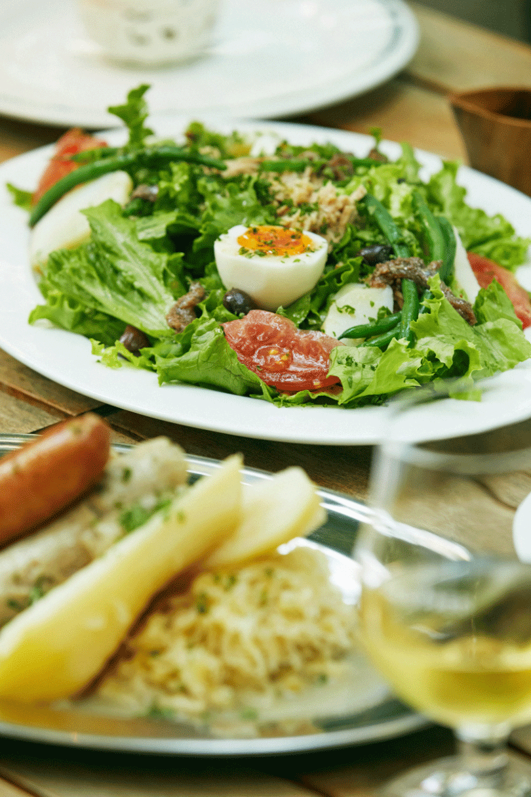
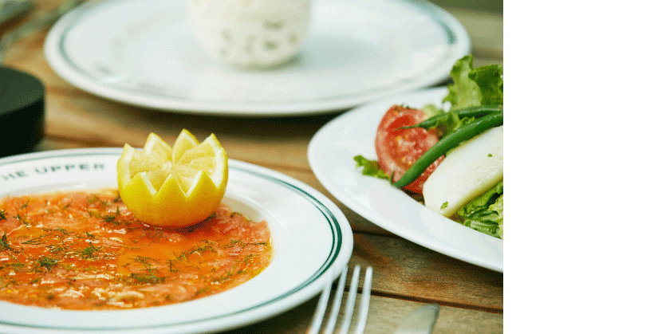
一皿ずつの驚きのある“THE UPPER”のメニューは、フランス料理と言えど気負わずいただけるカジュアルさが嬉しい。ニースサラダはビネガーとオイルのドレッシングで仕上げた、ザ・サラダとも言うべき直球の一皿。たっぷりの野菜にアンチョビやオリーブと素材の味を楽しみたい。サーモンのマリネは、敷き詰められた美しい盛りに感動。口に入れるとオレンジやレモンの柑橘が爽やかに香る。
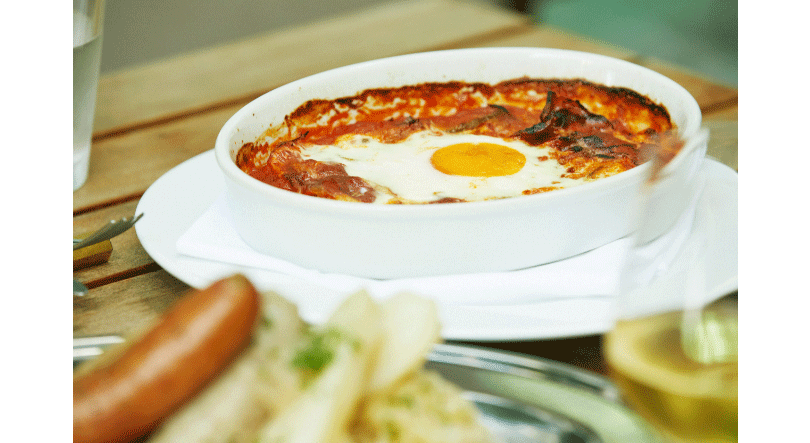
“ピペラード”はパプリカなどの野菜をトマトソースで煮込み、さらに卵を落としてオーブンで焼いて仕上げたもの。卵を崩して和えながらいただのが楽しい。たっぷりのザワークラウトに、自家製ソーセージと豚肉に大きながじゃがいもを加えたアルザスの伝統料理、“シュークルート”もオススメだ。
料理の監修は、『ミシュラン2つ星』『ASIA’S BEST 50 6位』を獲得する高田裕介シェフ。
「上質な空間で、豪快な料理を食べて、素直に美味しいと思っていただく…このギャップが新鮮で面白いかな、と。なお10Fでは今のブラッスリーメニューを継続しつつ、9Fでは逆の方向性のコースが始まります。こちらも楽しんでいただけたら」。
“THE UPPER”の進化はなお続きそうだ。
料理の監修は、『ミシュラン2つ星』『ASIA’S BEST 50 6位』を獲得する高田裕介シェフ。
「上質な空間で、豪快な料理を食べて、素直に美味しいと思っていただく…このギャップが新鮮で面白いかな、と。なお10Fでは今のブラッスリーメニューを継続しつつ、9Fでは逆の方向性のコースが始まります。こちらも楽しんでいただけたら」。
“THE UPPER”の進化はなお続きそうだ。
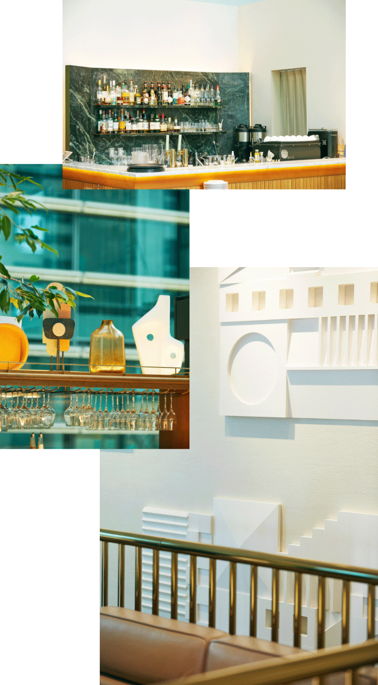

The UPPER
〒105-0005
東京都千代田区丸の内１丁目３−４
TERRACE 10F
03-5962-9909
Lunch time 11:30-15:00
Dinner time 15:00-22:30
〒105-0005
東京都千代田区丸の内１丁目３−４
TERRACE 10F
03-5962-9909
Lunch time 11:30-15:00
Dinner time 15:00-22:30
Composition & Text: Takako Nagai [CATAL DESIGN]